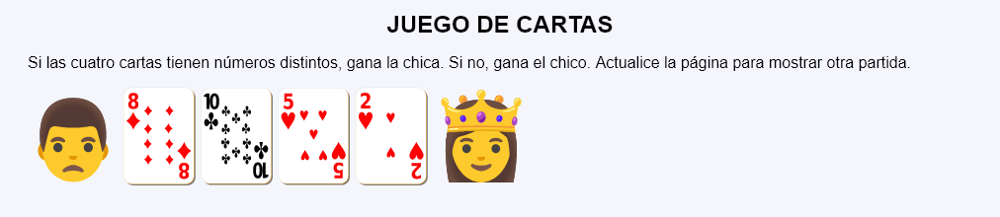
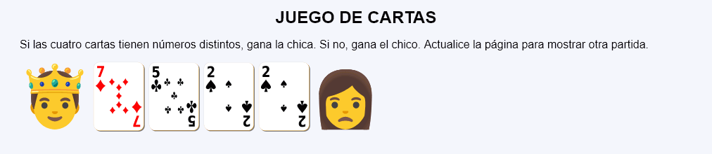

En este ejercicio se debe crear un programa que muestre una partida de un sencillo juego de cartas.


<p>
<img src="img/man-u1f468-modificado.svg" alt="Perdedor" height="92">
<img src="img/cartas/d8.svg" alt="8 de diamantes" height="100">
<img src="img/cartas/t10.svg" alt="10 de treboles" height="100">
<img src="img/cartas/c5.svg" alt="5 de corazones" height="100">
<img src="img/cartas/c2.svg" alt="2 de treboles" height="100">
<img src="img/princess-u1f478.svg" alt="Ganadora" height="100">
</p>
<p>
<img src="img/prince-u1f934.svg" alt="Ganador" height="100">
<img src="img/cartas/d7.svg" alt="7 de diamantes" height="100">
<img src="img/cartas/t5.svg" alt="5 de treboles" height="100">
<img src="img/cartas/p2.svg" alt="2 de picas" height="100">
<img src="img/cartas/p2.svg" alt="2 de corazones" height="100">
<img src="img/woman-u1f469-modificado.svg" alt="Perdedora" height="92">
</p>